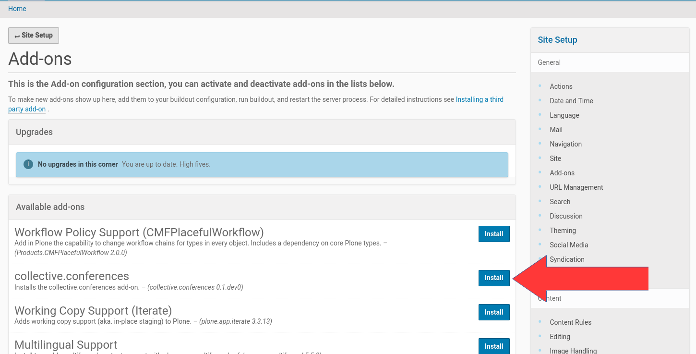

Installation¶
You can install the Plone add-on collective.conferences using zc.buildout and the plone.recipe.zope2instance. Thus you could add it to the list of eggs to install, e.g.:
[buildout]
...
eggs =
...
collective.conferences
Once you have added the add-on re-run buildout, e.g. with:
$ ./bin/buildout
Once your buildout finished you had to create a new Plone site and then install and activate the Plone add-on inside this new Plone site. Therefor you had to go to the Plone ‘Site Setup’ adminstration area. If you got administration permissions you find a link to it in the menu entry with your name (or ‘admin’). You could reach it directly by adding ‘/@@overview-controlpanel’ to the URL of your Plone site.
In the ‘Site Setup’ page click on ‘Add-ons’ and you get a list of the Plone add-ons which are available in your Plone site.
{kind=link}
You will get a list like in the above screenshot. Click on the ‘install’ button next to the ‘collective.conferences’ list entry and the add-on will be installed in your Plone site.